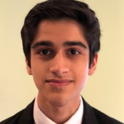
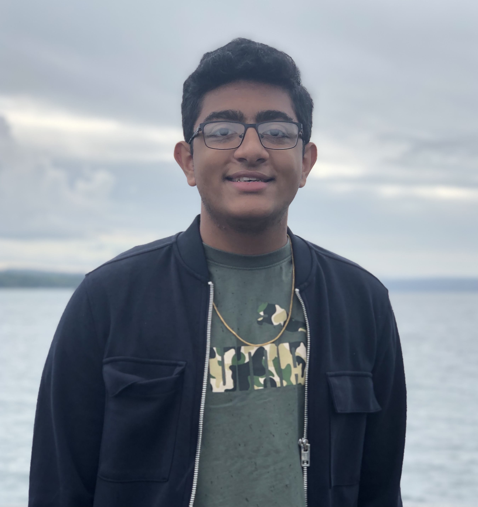
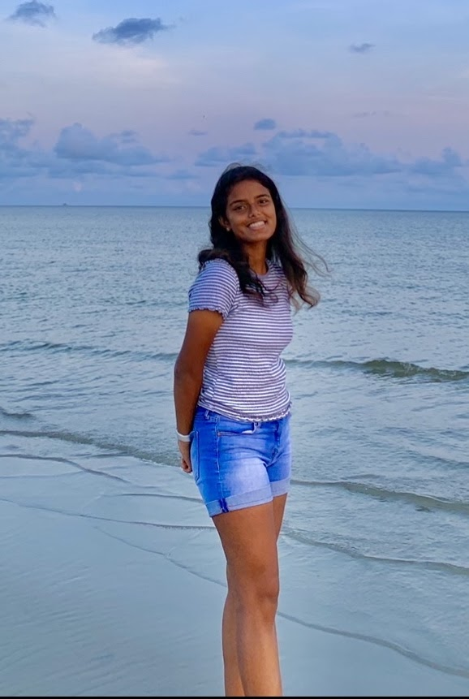

What is TSA?TSA is a national, non-profit organization of high school and middle school student members who are engaged in STEM. Since TSA was chartered in 1978, over 5,000,000 members have participated through competitions, intracurricular activities, leadership opportunities, and community service. |

|
|

President"Hi everyone, I'm Rushil, this is my 4th year in TSA and I'm a senior. This year, I hope to help improve communications and collaboration, encourage more leadership in further levels of TSA, and raise the success of CVTSA at regional and state levels. Favorite Events: Engineering Design, Flight Endurance." 
Vice President"Hello CV-TSA! My name is Avanti Athavale, and I am serving as your chapter vice-president. I am currently a junior, and this is my fourth year in TSA. My favorite TSA events are Children Stories and Coding. Good luck to everyone with the upcoming year!" 
Treasurer"Hello my name is Anthony Santos, this will be my 2nd year doing TSA and i'm a senior. My main goal this year is to make joining TSA easier and making it easy to pick up new events. If it is through communication, personal relationships or working with leadership i hope to make is an enjoyable experience for new members. Favorite Events: Engineering Design." 
Secretary"Hi! My name is Shivani Venkatesh and I am currently a junior. I have been a part of TSA since my freshman year and this is my 3rd year. I am very interested in STEM and hope to take on a career in it in the future. Favorite Events: Digital Video Production, Forensics and Prepared Presentation"

Sergeant-at-Arms"Hello everyone, my name is Adrian Maliackel. I am a junior and this is my third year in TSA. I am very interested in STEM and technology in general, which is why I aspire to do well in this club. Favorite events: Biotechnology Design, Engineering Design" 
Reporter"Hey, my name is Shubham Gupta and this is my 5th year in TSA. I really enjoy CAD and programming. Favorite events: Software Development"

❮
❯
HistorianHi everyone, I'm Varnika Udhayakumar and this is my third year in TSA! My favorite events include digital video and extemporaneous speech, but I really just like working with my friends in any events! |
Our Chapter OfficersOur officers help run and monitor our TSA chapter. They provide assistance to our fellow members and help us improve as a whole. Each year, we elect new members to be a part of the team. There are officers in our high school as well as the two middle schools. |